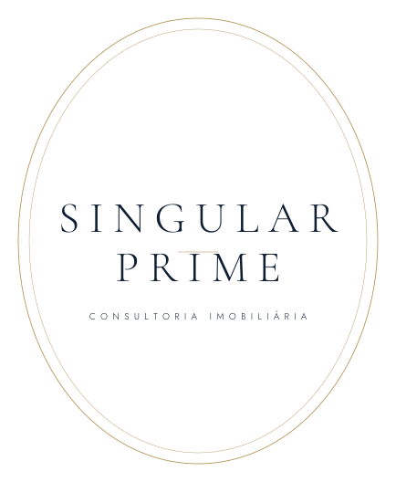

Cardô Marketing · estudo de marca
Singular Prime · caminhos de marca
Treze direções, construídas em tipografia e geometria, com fontes de licença aberta (Cormorant Garamond, Playfair Display, EB Garamond e Jost). Material de estudo: nenhuma delas é a versão final.
Rodada 1 · os cinco primeiros caminhos Filete, placa, selo, portal e losango.
A · filete A · filete B · placa B · placa C · selo C · selo D · portal D · portal E · losango E · losango
Rodada 2 · refinamento e comparação de serifadas Fios mais finos, peso leve e mais respiro. A linha 1 aparece nas três fontes.
1 · filete · Cormorant 1 · filete · Playfair 1 · filete · EB Garamond 1 · filete 2 · duas linhas 2 · duas linhas · Playfair 3 · selo refinado 3 · selo · Playfair 4 · monograma 4 · monograma · Playfair 5 · iniciais acima 5 · iniciais · Garamond
Rodada 3 · mais oito caminhos Claro em Cormorant, escuro em Playfair.
06 · entrelaçado 06 · entrelaçado 07 · quadro 07 · quadro 08 · sem serifa 08 · sem serifa 09 · PRIME deslocado 09 · PRIME deslocado 10 · brasão 10 · brasão 11 · fios verticais 11 · fios verticais 
12 · selo oval 12 · selo oval 13 · lockup horizontal 13 · lockup horizontal Cardô Marketing · agencia@cardomarketing.com.br